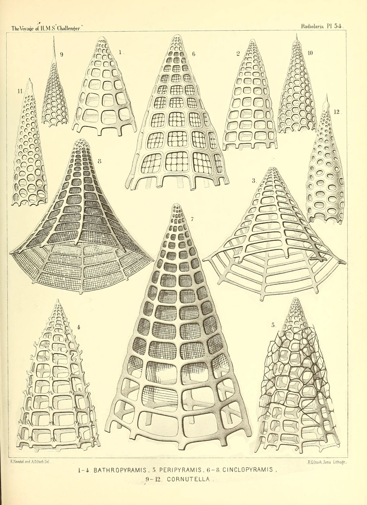

Radiolaria, Plate 54: Bathropyramis, Peripyramis, Cinclopyramis, Cornutella (Report on the Scientific Results of the Voyage of H.M.S. Challenger)
Ernst Haeckel & Adolf Giltsch · 1887 · Lithograph · Smithsonian Libraries and Archives
Free to use
Radiolarians are single-celled organisms between a tenth and a fifth of a millimetre across, with skeletons usually made of silica. The Challenger crew took 133 dredges of the sea bottom and 151 open-water trawls, and the expedition's published report catalogued more than 4,000 species not known before. Haeckel was fifty-three when this volume of plates appeared.